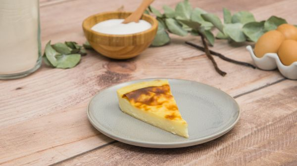
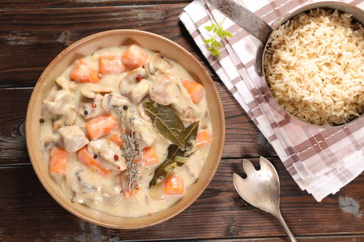
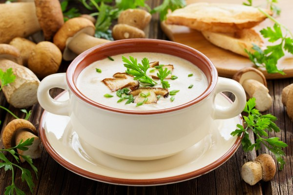

Flan pâtissier traditionnel

Un flan pâtissier est un mets popularisé par les pâtissiers, qui présente un flan sur une base de pâte brisée. On peut rapprocher le flan du pastel de nata portugais, de la custard tart britannique. Il peut être adapté aux goûts de chacun en ajoutant du caramel, de la noix de coco ou encore du chocolat.
Voir la recette
Blanquette de veau traditionnelle

La blanquette, ou blanquette de veau ou blanquette de veau à l'ancienne, est une recette de cuisine traditionnelle de cuisine française, à base de viande de veau cuite dans un bouillon avec carotte, poireau, oignon et bouquet garni, liée en sauce blanche et aux champignons de Paris.
Voir la recette
Cake salé au jambon et aux olives

Les cakes salés sont des recettes familiales que l'on peu réaliser pour l'apéritif ou comme entrée avec un peu de salade. Ainsi cette recette de cake au jambon, gruyère et olives ne déroge pas à la règle. Composée de talon de jambon, de gruyère râpé, d'olives vertes, de lait et d'huile d'olive; cette recette de cake est facile et rapide à réaliser pour toutes les occasions.
Voir la recette
Ramequins fondants au chocolat

Les ramequins fondants au chocolat sont des fondants individuels à base de chocolat, farine, sucre, beurre et oeufs réalisés dans des ramequins. Faciles et rapides à réaliser, ils sont idéaux pour les collations de la journée
Voir la recette
Velouté de champignons

Un velouté de champignons est un type de soupe préparée à partir d'un simple roux dilué avec de la crème ou du lait, dans lequel sont ajoutés des champignons ou un bouillon de champignons.
Voir la recette
Boeuf Bourguignon rapide

Le bœuf bourguignon est une recette de cuisine d'estouffade de bœuf considerée aujourd'hui comme étant traditionnelle de la cuisine bourguignonne, en France. Cuisinée au vin rouge de Bourgogne, avec une garniture de champignons, de petits oignons et de lardons, ses variations d'accompagnement sont multiples.
Voir la recette